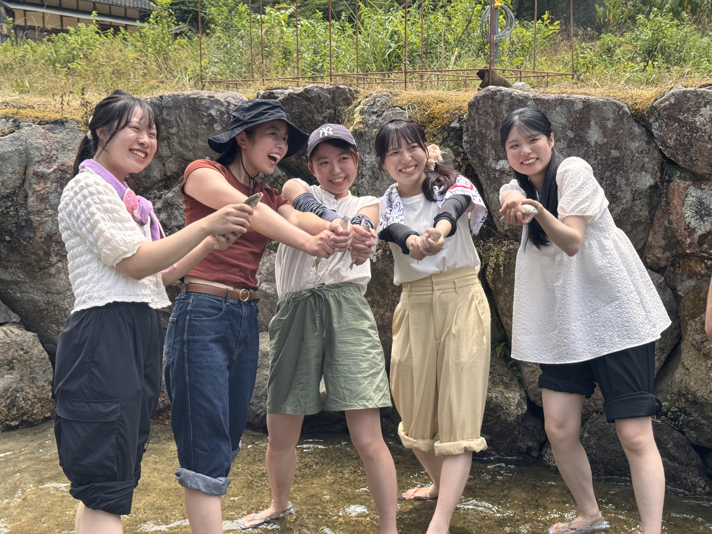

鮎をつかまえる
水の中に入り、泳いでいる鮎を手で追いかけます。

SUMMER EXPERIENCE
水の中を元気に泳ぐ鮎を、自分の手で追いかけてつかまえる 夏限定の体験です。
捕まえた鮎はスタッフが塩焼きにし、 焼きたてをその場でお召し上がりいただけます。
年齢制限はありませんので、小さなお子さまも 保護者の方と一緒にお楽しみいただけます。
HOW TO ENJOY
水の中に入り、泳いでいる鮎を手で追いかけます。
捕まえた鮎は、スタッフが香ばしく塩焼きにします。
自分で捕まえた鮎を、焼きたてでお楽しみください。
INFORMATION
水しぶきなどで服が濡れる場合があります。
脱げにくく、滑りにくいものがおすすめです。
特に小さなお子さまは、着替えがあると安心です。
ご予約・お問い合わせは電話で承ります
当日受付も可能ですが、混雑状況や鮎の在庫によっては ご案内できない場合があります。事前のご予約がおすすめです。
お電話の際に「希望日・希望時間・鮎の匹数」をお伝えください。